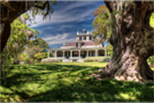

Aimee Duplantis and Matthew Shwery got married! They made it official on September 16, 2011 with so many incredible friends & family. Thanks all who celebrated with us in presence & in spirit!
Aimee Duplantis and Matthew Shwery got married! They made it official on September 16, 2011 with so many incredible friends & family. Thanks all who celebrated with us in presence & in spirit!
7:00 pm on Friday, September 16, 2011
Located in New Iberia's historic downtown, this church holds special meaning for the Duplantis family as Aimee's parents were married here.108 E Saint Peter St., New Iberia, LA 70560
Following the Ceremony
Located just outside of town, this is a beautiful place to tour. Stop by for lunch at Cafe Jefferson or visit the historic Jefferson mansion.5505 Rip Van Winkle Rd., New Iberia, LA 70560
It takes about 18 hours to get here from Iowa, but we've seen it done in less time (and more).
After watching "Into the Wild" you may think this is a good idea. Unless you live in New Iberia, plan your journey (far) in advance.
You can find more information on lodging, local tourism and more at www.IberiaChamber.org
400 Spanish Towne Blvd, New Iberia, Louisiana 70560(337) 321-6700
$119-139 (mention Duplantis-Shwery wedding for special rates)
318 W Highway 90 Frontage Rd, New Iberia, Louisiana 70560(337) 408-2700
$109+ (mention Duplantis-Shwery wedding for special rates)
{kind=link}
{kind=link}